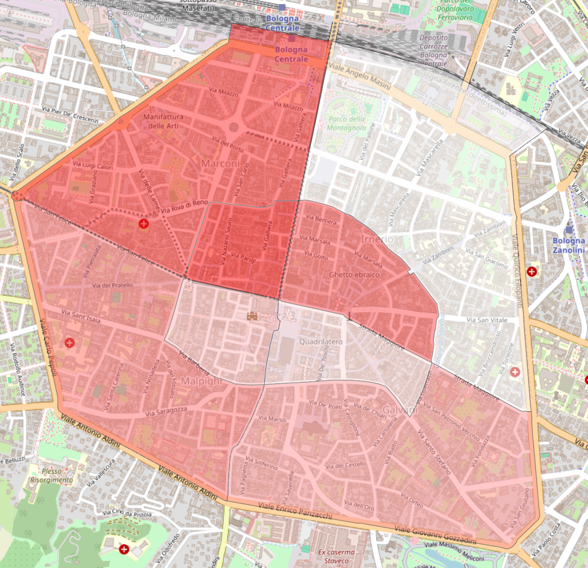
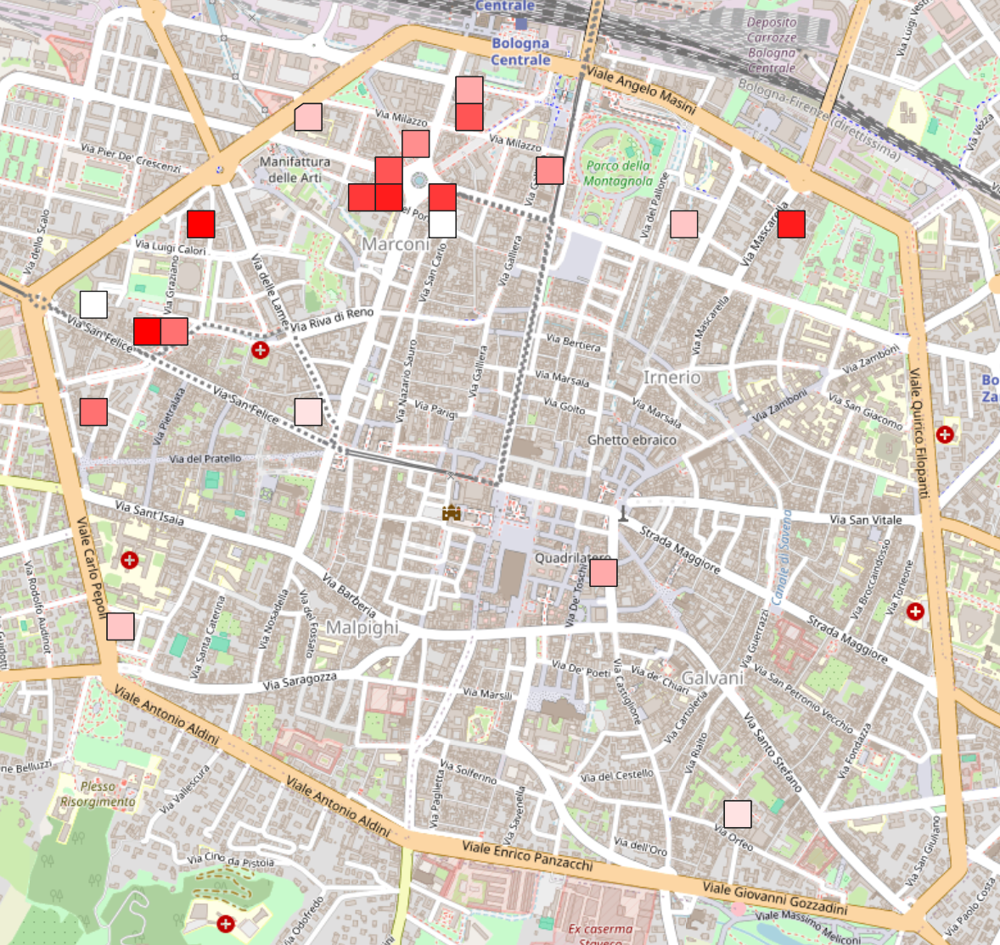
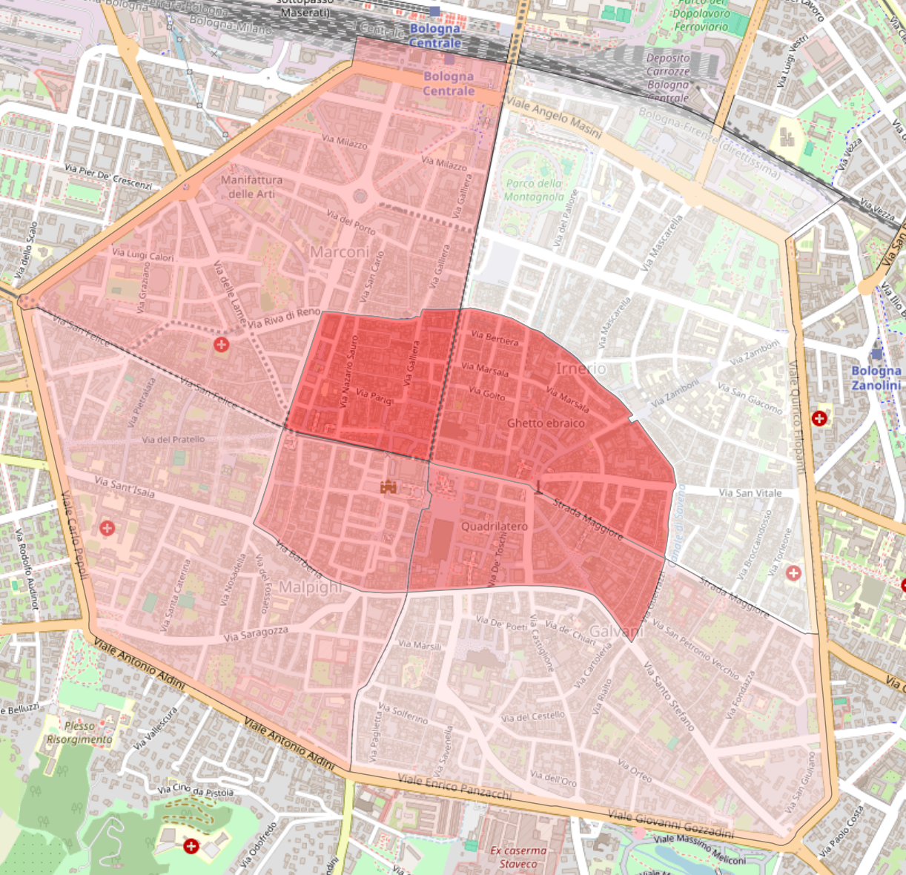
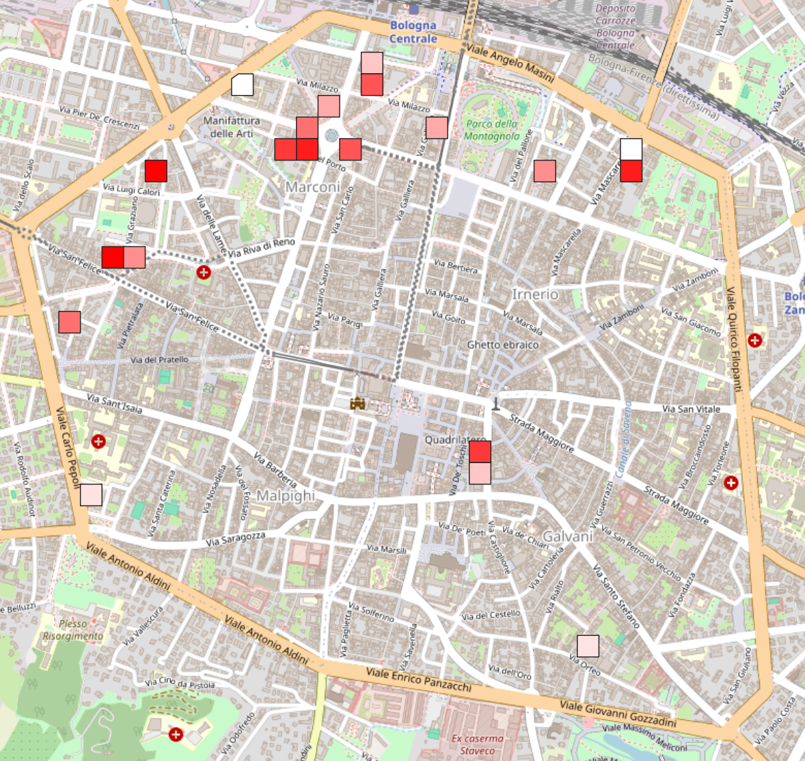
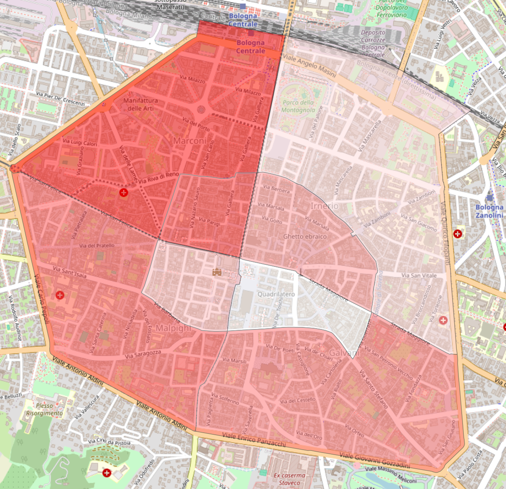
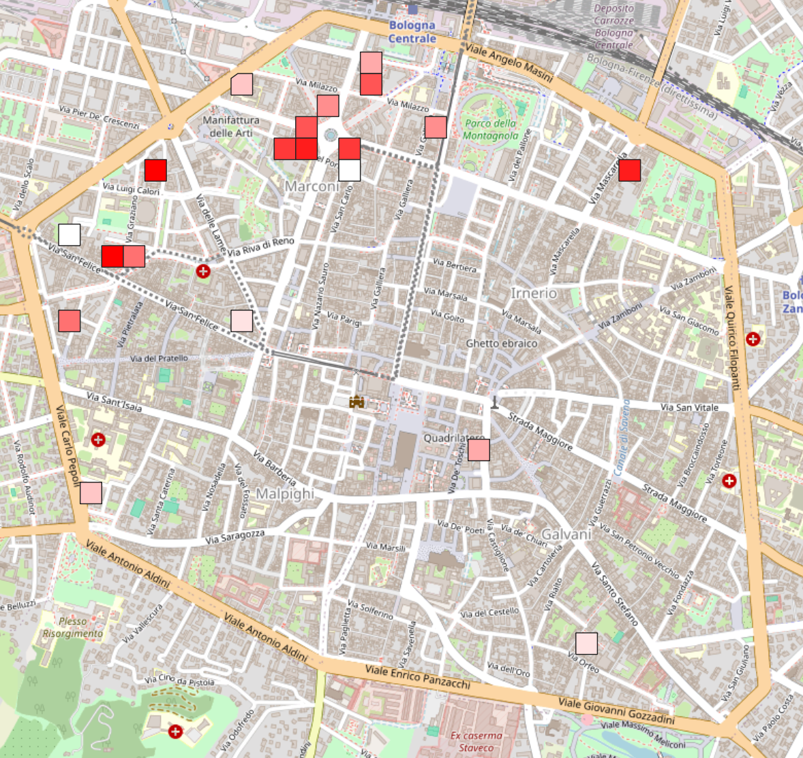
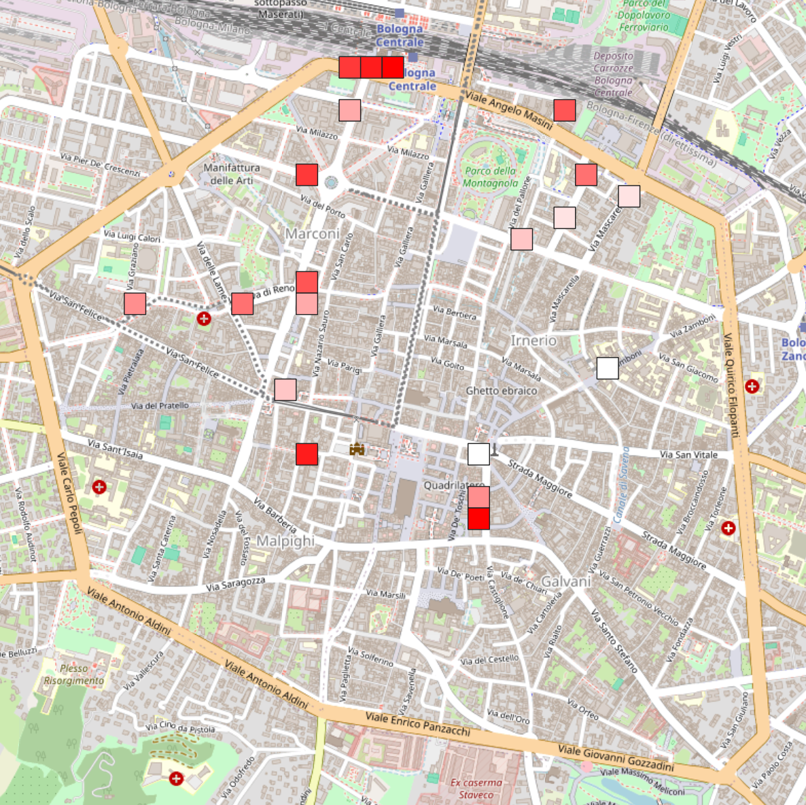
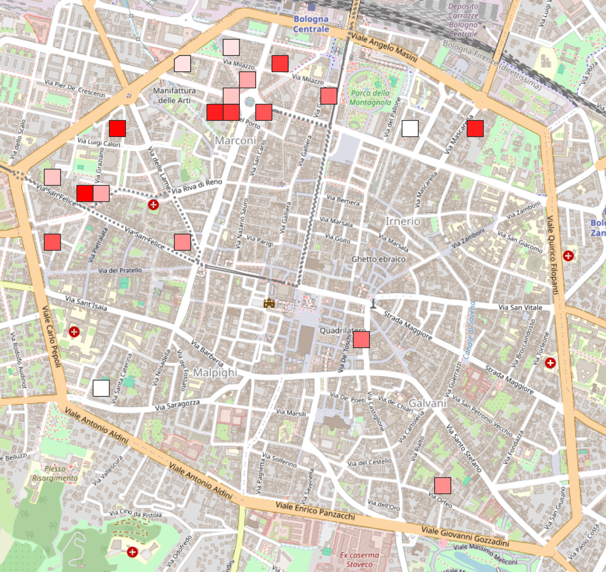

Bologna city center
The city center includes all the area inside the Bologna’s wall. In this scenario, it has been hypotesized the placement of 20 possible green cells.
Default configuration
In the “default” parameter configuration we have imposed that only 20% of the streets and 80% of the yards were available, in each cell, to insert new green areas. Furthermore, in the macro factor we have imposed that the weight of the population density and the green space already present is the same, 0.5 each.


Default config, utility graduated


Default config with population density highlighted
As was foreseeable, the majority of cells, and those with the higher utility, have been placed on zones with higher density population. This is expected, since in the 8 district in the city center there is a more or less equal distribution of the green areas and spaces were to place new green areas.
Green enanched
Enanching the green parameter of the macro factor, with respect to the density, we can note how some cells are now individuated in the areas lacking of green. And, the utility scale grading is now a little bit different.


Default config, utility graduated


Default config with population density highlighted
Density enanched
Enanching the density parameter of the macro factor, with respect to the green, we can note how some cells are placed with respect to density, so as the macro factor slightly change.


Default config, utility graduated


Default config with population density highlighted
No yard
Removing the yard as the availability to place new green areas has been experimented, by setting at 0 the corresponding parameter in the utility function.
Of course, the macro factor visualization is the same as the default one.
Default config, utility graduated


Default config with population density highlighted
No street
Also removing the streets as the availability to place new green areas has been experimented, by setting at 0 the corresponding parameter in the utility function. This experiment does not produce a strong change in the results, this is due to the already small amount of streets available to build on. Indeed the default value is setted to 20%.
Of course, the macro factor visualization is the same as the default one.
Default config, utility graduated


Default config with population density highlighted
Conclusion
Overall, in the city center, we are not going to encounter strong changes throught the different experiments. This is not a surprise, since the area under examination is small, so as the number of new cells. Furthermore, no “fancy” experiments have been made, such as using the 100% of roads, since they are not realistic in a real-world case.